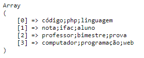
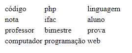
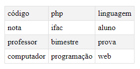

Questão 1
Analise o conteúdo da variável $a (string), a qual apresenta um padrão de texto onde as palavras são separadas na linha pelo caracter (*) e nas colunas pelo caracter (;). Elabore um código na linguagem PHP que extraia o conteúdo desta variável e apresente a saída formatada em uma tabela HTML. Dica: utilize a função explode() do PHP.
$a ='código;php;linguagem*nota;ifac;aluno*professor;bimestre;prova*computador;programação;web' ;
Como está sendo sugerido na alternativa, devemos usar o método explode() do php, vamos começar com o que ela faz. Essa função é responsável por dividir uma string em diferentes partes, determinada por um caractere divisor, o método leva dois argumentos sendo ambos do tipo string, esses argumentos são o caractere divisor e a string que será dividida.
Saida:
Note que temos um array como retorno, nele está contido todas as divisões efetuadas.
Agora que temos as linhas, basta que em cada uma delas aplicar o explode() novamente e mostrar dentro de uma tabela o resultado, faremos isso usando o foreach().

Saida:
Agora vamos aplicar um pouco de css e temos isso:
